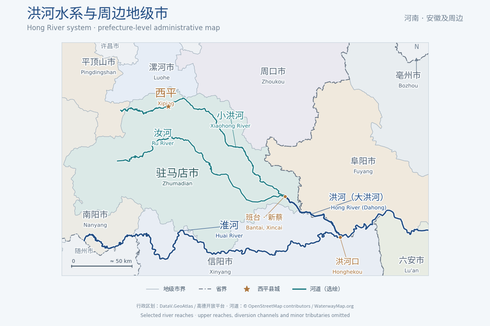
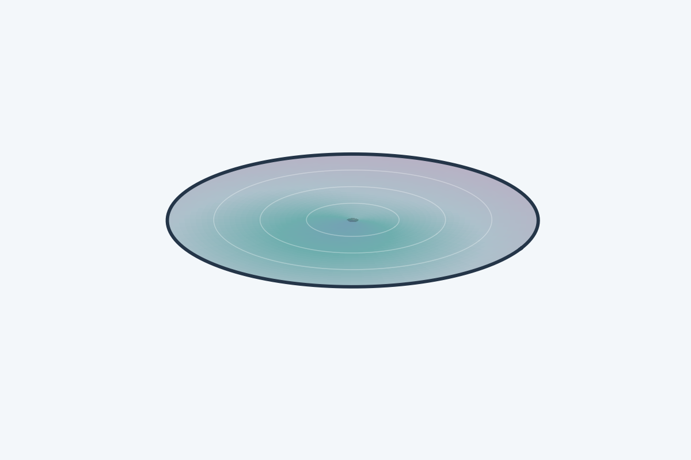
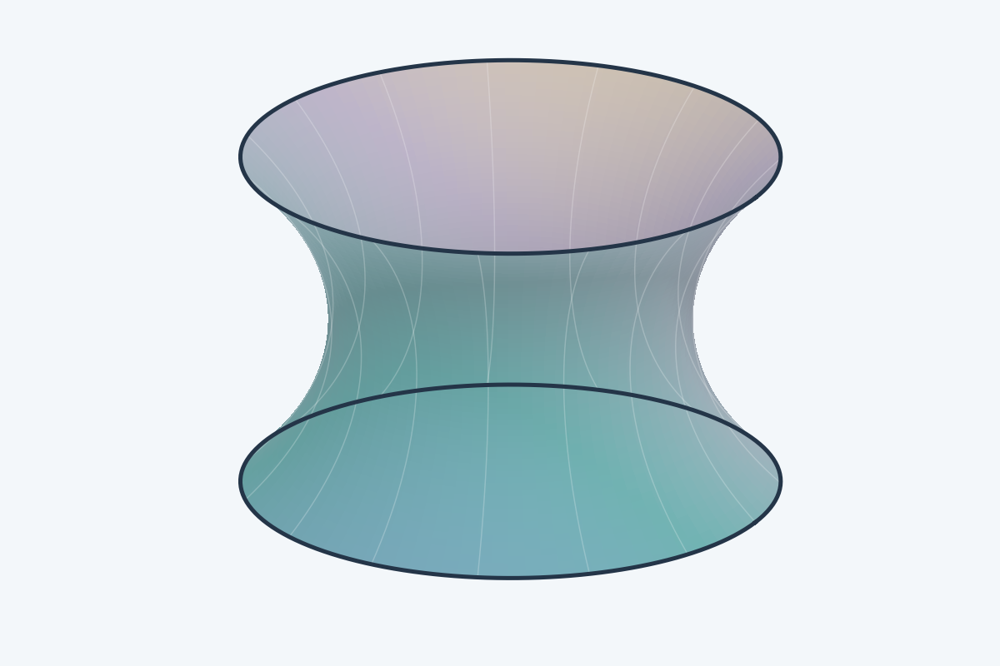
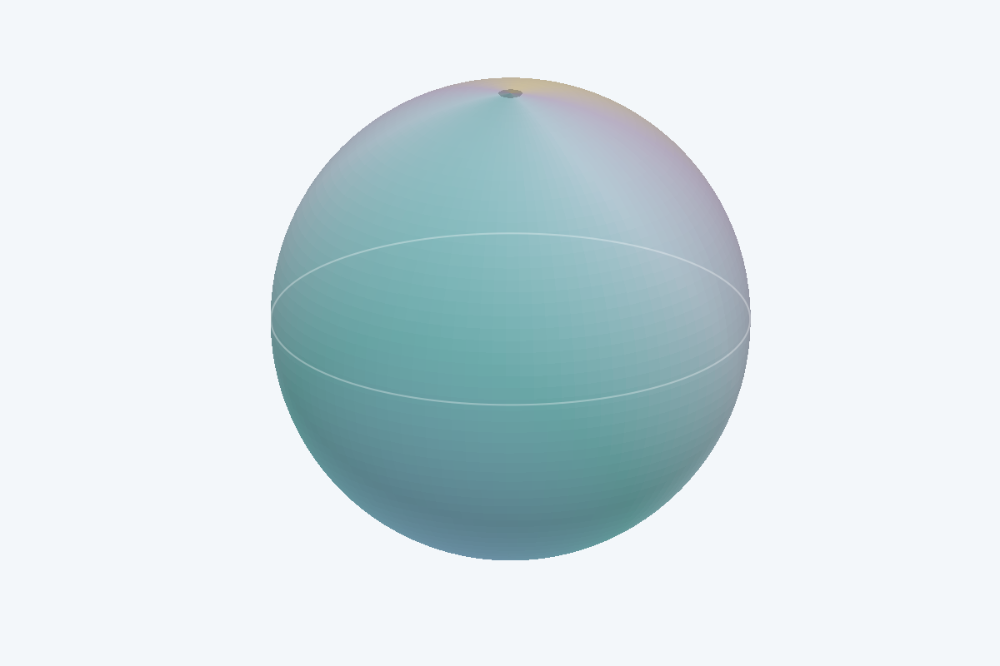
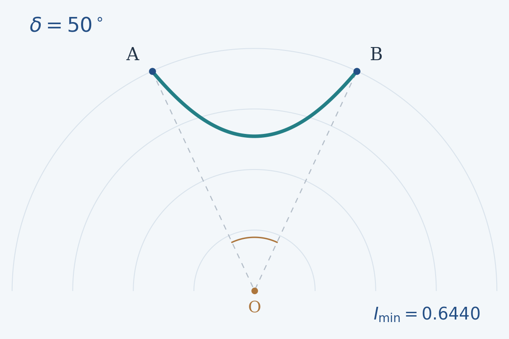
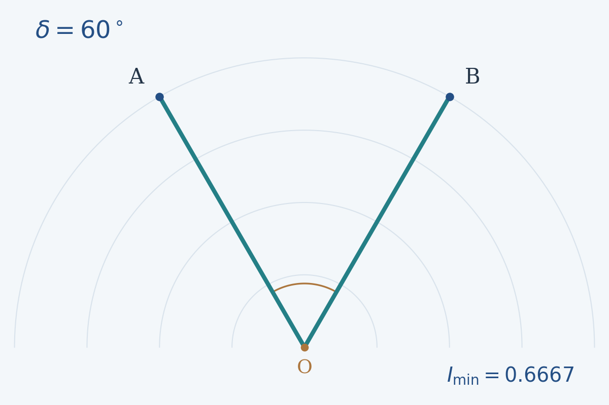
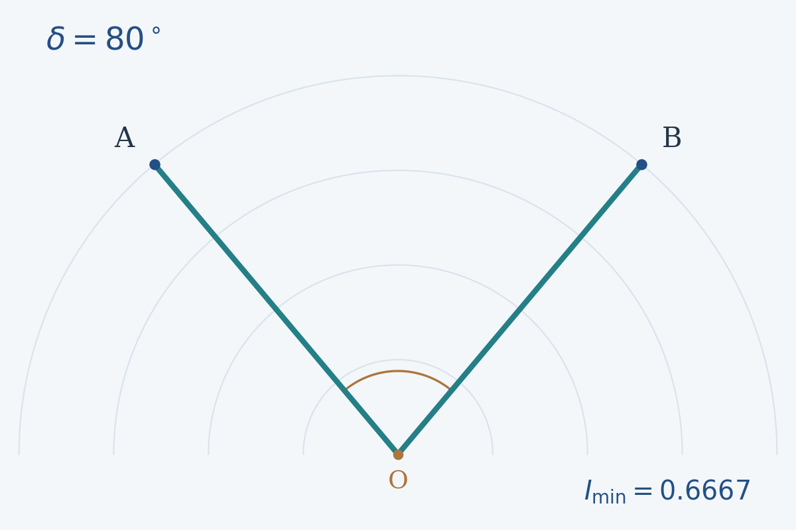

Hongbin Cui (崔洪斌)
School of Mathematical Sciences
University of Science and Technology of China
96 Jinzhai Road, Hefei, Anhui 230026, China
Email: cuihongbin@ustc.edu.cn
About my name
My surname, Cui (崔), is a traditional Chinese surname listed in the Hundred Family Surnames (百家姓). The same character is also used as a Korean surname, commonly romanized as Choe or Choi.
My given name is Hongbin (洪斌). Hong (洪) comes from the Hong River, in the Huai River basin, beside which my mother's family lived. Bin (斌) combines the characters wen (文, literary learning) and wu (武, martial ability).
Rivers and my hometown
The Hong River connects my name with my family’s landscape. A regional map traces its connection to the Huai River and shows the surrounding prefecture-level cities; photographs show the Huai at Bengbu and my hometown of Xiping.

The Hong River 洪河
The Xiaohong River and the Ru River meet at Bantai in Xincai County. Their combined flow forms the Hong River, also called the Dahong River, which joins the Huai at Honghekou. The map marks Xiping within Zhumadian and shows the surrounding prefecture-level cities. Hong (洪) is the first character of my given name.
Boundaries: DataV.GeoAtlas / AMap. Rivers: © OpenStreetMap contributors, via WaterwayMap.org. Selected river reaches.
The Huai River 淮河
The Huai is one of the great rivers of central China, flowing east from Henan through Anhui to Jiangsu. This view of the river at Bengbu places the waterways of my hometown within a much larger landscape.
Xiping, Henan 西平
I come from Xiping County, part of Zhumadian City in Henan. Its rivers, cultivated plains and town life form the landscape of my hometown. In spring, flowering trees line many of its riverside walks.
About me
I am an Associate Researcher at the University of Science and Technology of China (USTC). From 2022 to 2024, I was a postdoctoral researcher at USTC, working with Prof. Xiaowei Xu. I received my Ph.D. from the University of Chinese Academy of Sciences in 2022 under the supervision of Prof. Xiaoxiang Jiao.
My research interests are in differential geometry, geometric analysis, and geometric measure theory, particularly minimal submanifolds and area-minimizing cones. I study area minimization using calibrations, subcalibrations, and Lawlor's curvature criterion, as well as their connections with algebraic structures. During my master's studies, I worked on minimal two-spheres in projective spaces.
Soap films, bubbles and area
Everyday films reveal a central theme of geometric analysis: how a boundary, a constraint or an energy selects a shape.

A flat soap film
A film spanning a circular wire can form a flat disk. The disk is an area minimizer for that boundary; orthogonal projection onto its plane gives a direct geometric proof.
Mathematical rendering · fixed boundary

A soap-film catenoid
Two coaxial rings can support a catenoid-shaped soap film. Its mean curvature is zero. Whether a particular catenoid is stable or globally minimizing requires more than the minimal-surface equation.
Mathematical rendering · zero mean curvature

A bubble holds a volume
A spherical bubble minimizes area at fixed enclosed volume. Its nonzero constant mean curvature reflects the pressure difference. It illustrates a constrained variational problem.
Mathematical rendering · fixed enclosed volume
Minimal, stable, minimizing. Zero mean curvature is a first-variation condition; stability concerns the second variation; area minimization compares all admissible competitors. A physical soap film may settle into a local energy minimum.
Mason’s transition in Euler’s problem
Euler’s weighted-length problem asks for a curve of least moment of inertia. Mason studied its minimizers in 1906. For density |x|², the critical opening angle is 60°.
I(γ) = ∫γ |x|² ds, δ = ∠AOB, |OA| = |OB| = 1.

Before the critical angle
At δ = 50°, the minimizer is a smooth curve avoiding O. The radial weight makes travel near O less costly. A and B both lie on the unit circle.
Exact curve · δ < 60°

At the critical angle
At δ = 60°, the minimizing path reaches O and consists of two radial segments. The limiting curve has a corner at the point where the density vanishes.
Exact curve · δ = 60°

Beyond the critical angle
At δ = 80°, the path A–O–B remains minimizing. Its weighted length is 2/3. The change at 60° concerns regularity and the type of minimizer.
Exact curve · δ > 60°
The admissible class here includes rectifiable curves through the origin. The optimal curves approach the broken radial path continuously as δ increases to 60°. The transition is a loss of smoothness, rather than a jump in their location or in the minimum energy.
Explore the angle and the exact formula
Smooth minimizer (δ < 60°).
Minimum energy:
For δ < π/3, the symmetric minimizer satisfies r³ cos(3θ) = cos(3δ/2), with −δ/2 ≤ θ ≤ δ/2. Here θ is measured from the angle bisector. The minimum energy is (2/3) sin(3δ/2). For δ ≥ π/3, it is 2/3.
The change of variables ρ = r³/3, φ = 3θ turns the weighted line element into the Euclidean line element on a flat cone of total angle 6π. The angular coordinate must remain unwrapped; identifying it modulo 2π would give incorrect minimizers.
My research studies higher-dimensional weighted area problems, including the stability and minimizing properties of cones: Cui–Xu, Mathematische Annalen (2025).
Mathematical references and image credits
- M. Mason, Curves of Minimum Moment of Inertia with Respect to a Point, Annals of Mathematics 7 (1906), 165–172. Original paper.
- U. Dierkes and G. Huisken, The n-dimensional analogue of a variational problem of Euler, Math. Ann. 389 (2024), 3841–3863. Journal.
- U. Dierkes and R. López, Axisymmetric stationary surfaces for the moment of inertia (2026), introduction. Journal.
- H. Cui and X. Xu, On Euler–Dierkes–Huisken variational problem, Math. Ann. 391 (2025), 2087–2120. arXiv.
- University of Cambridge: soap films and minimal surfaces.
- Photographic sources are linked under each photograph. The regional map uses DataV.GeoAtlas / AMap administrative boundaries and OpenStreetMap river geometry, aligned to the boundary data’s coordinate system. It displays prefecture-level divisions and selected river reaches, omitting upper reaches, diversion channels and minor tributaries. Xiping is marked as a county town within Zhumadian. River connections were cross-checked against China Water. The mathematical diagrams were drawn from explicit formulas for this page.
Publications and Preprints
Preprints
- Hongbin Cui, Xiaoxiang Jiao, Hangyue Zhu. Real Determinantal and Segre Varieties: Stability and Area Minimization. Preprint (2026). [arXiv:2611.23980]
- Hongbin Cui, Xiaowei Xu, Shoulan Yi. Curvature estimates for stable hypersurfaces of the Euler–Dierkes–Huisken functional. Preprint (2026). [arXiv:2611.10597]
- Hongbin Cui. Lawlor's curvature criterion and topologically trivial area-minimizing hypercones of Hsiang type. Preprint (2026). [arXiv:2610.31341]
- Hongbin Cui. Laplacian Algebras and Subcalibrations for Minimal Hypercones. Preprint (2026). [arXiv:2609.17217]
- Hongbin Cui, Shuping Huang. The Morse Index, Nullity and Jacobi Fields of Constant-Curvature 2-Spheres in Complex Projective Spaces. Preprint (2026). [arXiv:2609.00922]
- Hongbin Cui, Jiahuan Li, Xiaowei Xu. Bernstein-type theorem for stationary hypersurfaces of the Euler–Dierkes–Huisken functional. Preprint (2026). [arXiv:2606.30008]
- Hongbin Cui. On FKM isoparametric hypersurfaces in Sn × Sn and new area-minimizing cones. Preprint (2025; revised 2026). [arXiv:2510.14650]
Published papers
- Hongbin Cui. A family of area-minimizing tensor varieties. Proc. Amer. Math. Soc. 154 (2026), 4233–4244. [journal] [arXiv:2607.10157]
- Hongbin Cui, Qing Chen. On Euler–Dierkes–Huisken variational problem II: Stationary Lagrangian graphs and minimizing cones. J. Differential Equations 453 (2026), 113916. [journal]
- Hongbin Cui, Xiaowei Xu. On Euler–Dierkes–Huisken variational problem. Math. Ann. 391 (2025), 2087–2120. [journal] [arXiv:2404.05132]
- Hongbin Cui, Xiaoxiang Jiao, Lijia Liu. Area-Minimizing Cones Over Products of Symmetric R-spaces. J. Geom. Anal. 35 (2025), 116. [journal]
- Hongbin Cui, Xiaoxiang Jiao, Xiaowei Xu. On area-minimizing Pfaffian varieties. J. Funct. Anal. 286 (2024), 110318. [journal] [arXiv:2305.06517]
- Xiaoxiang Jiao, Hongbin Cui, Jialin Xin. Area-minimizing cones over products of Grassmannian manifolds. Calc. Var. Partial Differential Equations 61 (2022), 205. [journal]
- Xiaoxiang Jiao, Hongbin Cui. Area-Minimizing Cones Over Grassmannian Manifolds. J. Geom. Anal. 32 (2022), 224. [journal]
- Xiaoxiang Jiao, Hongbin Cui. Construction of Conformal Minimal Two-Spheres in Quaternionic Projective Spaces by Twistor Map. J. Geom. Anal. 31 (2021), 888–912. [journal]
Teaching
School of Mathematical Sciences, University of Science and Technology of China
- Topics in Geometric Analysis — graduate course; two semesters.
- Differential Geometry — undergraduate course; one semester.